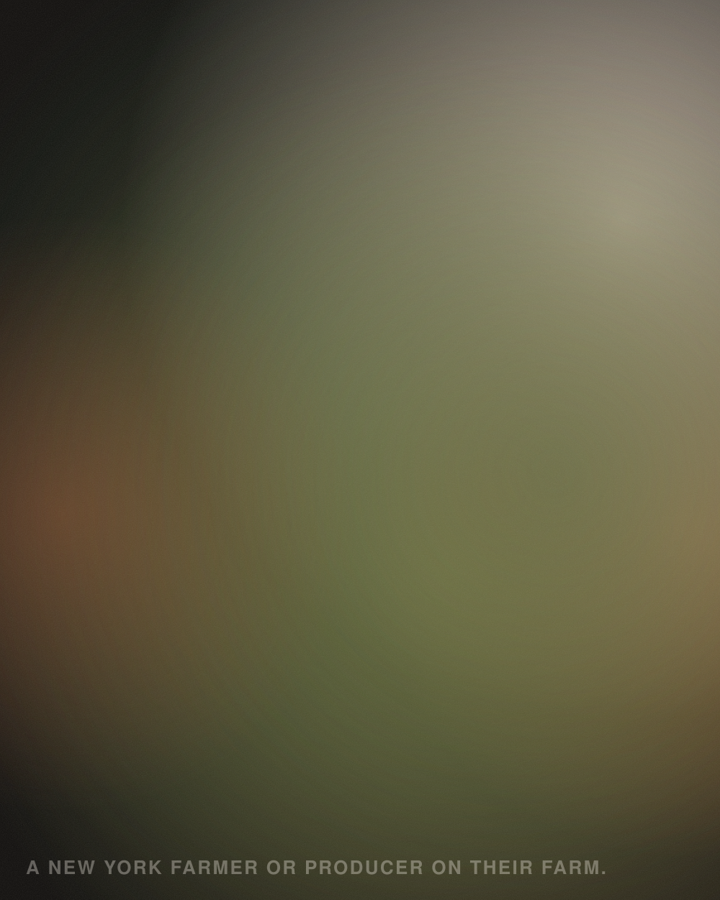

News and stories
From the neighborhood.
Updates, recaps, farmer stories, events and announcements.

Page structure and copy deck: docs/02-content-and-copy.md. Squarespace build steps: docs/04-squarespace-build-guide.md
Design prototype. This pass builds the homepage in full. This page shows the shared header, footer and type system only. Its sections are specified in docs/02-content-and-copy.md and built in the next pass.
News and stories
Updates, recaps, farmer stories, events and announcements.

Page structure and copy deck: docs/02-content-and-copy.md. Squarespace build steps: docs/04-squarespace-build-guide.md